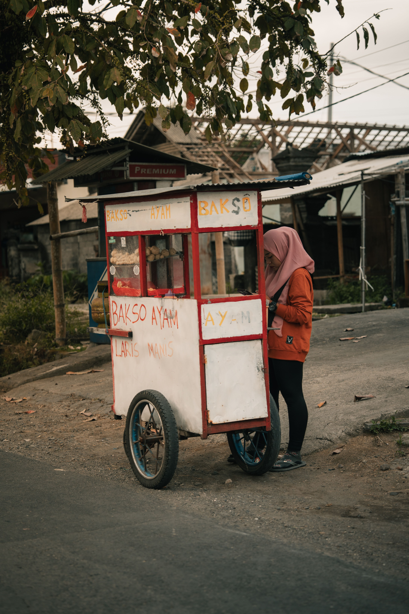
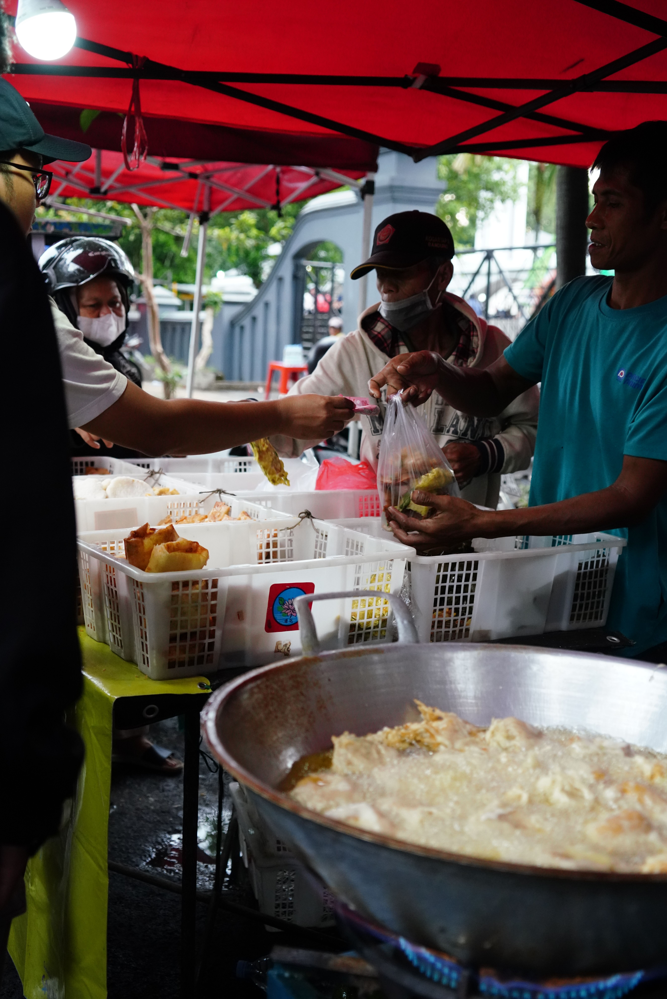
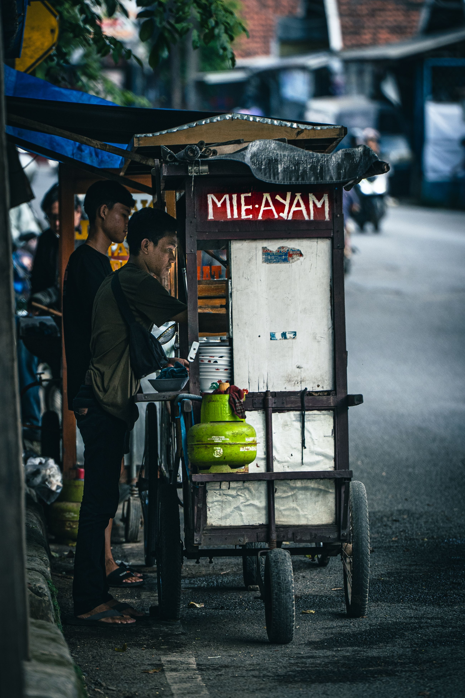
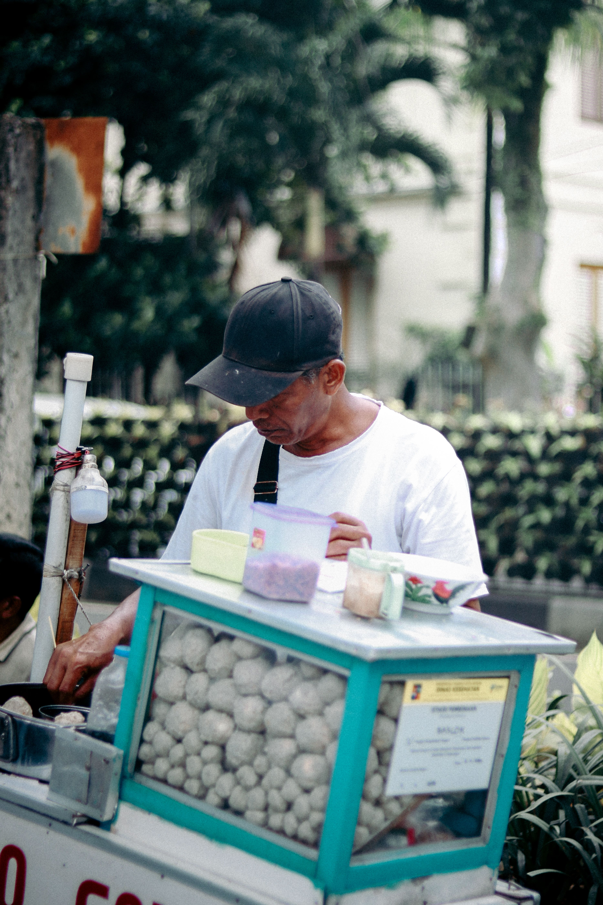

Ekonomi lagi sulit, daripada duit juragan habis kaga jelas buat judi online, hiburan malam, checkout barang gaib atau top-up game penguras emosi, mending alihkan dananya buat melariskan UMKM sekitar kita. Selain itu Juragan juga bisa merekomendasikan UMKM favorit Juragan buat kita beli!
Bukan investasi bodong, ini benefit nyata jalur langit, fisik, dan mental.
Menyelamatkan juragan-juragan sekalian dari khilaf belanja hal-hal percuma bin nirfaedah di e-commerce, main judi online, dll.
Jatah anggaran jajan manis dan junk food agan dialihkan ke kami. Otomatis konsumsi gula dan lemak agan terpangkas hari ini!
Merasa jauh lebih tenang, damai, dan dapet hormon bahagia (warm-glow) setelah ngeliat orang lain kenyang berkat agan.
Doa baik yang tulus serta laporan berupa foto produk asli yang telah kami belanjakan di UMKM.
Bukti nyata eksekusi di lapangan. Duit juragan beneran jadi senyuman!




Mulai aksi penyelamatan finansial dan bantu UMKM di sini.
Kaga ada minimal nominal, Juragan! Mau traktir satu biji gorengan (seribu perak) atau beli gerobak baksonya sekalian, yang penting keikhlasan Juragan buat muter ekonomi UMKM. Jangan lupa screenshot bukti transfernya ya!